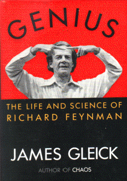

Geniusby James Gleick
publisher: Vintage Books
Non-fiction, 443 pages | 
(book cover art, Copyright ©1992 James Gleick)
Used with Permission. |
Return to the Book MenuPrevious|Next
Description:
A biography of "the man who came after Einstein." Feynman was
a "curious character," not the sort of person you would expect when you
hear that he revolutionized quantum theory, won the Nobel Prize and solved
the mystery of a National Disaster. A scientist with a lot of personality!
Recommended for: Biography lovers, Einstein worshippers,
people who wonder about genius.
Did-you-read questions:
Deadline: February 1, 2005.
These should be easy questions, but you should have the questions ready and keep an eye out during your reading. Each question should be answered with 1-2 sentences.
Note: these questions are not probably not the most important part of the book! Your essay will not have to cover these questions!
- What family member set Richard Feynman on the road to science as a young
child?
- To whom did Richard Feynman frequently send coded messages while he was living in Los Alamos for the Manhattan Project?
- For what "mysterious" skill did Richard Feynman become famous at Los Alamos?
- What musical instrument did Feynman play?
- What disaster caused Richard Feynman to become suddenly known to everyday
Americans?
Report Questions:Deadline: Peer Review Session on February 8, 2005; paper due February 10, 2005.
You should write a 3 - 4 page essay on one of the following questions. Your essay should include examples and references to the book, unless otherwise specified. Page number references are sufficient for citing material from the primary book. If you use outside materials, cite your sources in full. If you would rather write on a different topic, you may, but clear it with Mr. Howe or Ms. Sullivan first.
- The author of this biography chose the title Genius, instead of A Really
Smart Guy. He speaks of the idea of Genius in several places in the
text. What criteria would you use to determine whether somebody was a genius?
Do you know anybody who meets these criteria?
- Richard Feynman's attitude towards women was notorious, and somewhat self-contradictory. What do you think about the way he treated women, both in his personal life and in general?
- Richard Feynman has often been described as "a curious character." What
do you think of this description of him? Give examples that would support
this title.
- What aspects of Richard Feynman's life and personality surprised you the
most? In what was did he support or defy stereotypes about scientists?
Graphic and Presentation:
Deadline: February 21 - March 3, 2005.You will give a 10 minute presentation on both of the following:
- Convince your peers that they should (or should not) read this book. (This may include a brief summary of the book.) Give examples of what was cool or worthwhile in the book, and what you got out of it (or didn't).
- Describe a (realistic) science idea that you learned about in this book, citing information from at least 2 external sources (other than the dictionary). If you would like help choosing or understanding an idea from your book, you are invited to come talk to Mr. Howe or Ms. Sullivan.
Note: This presentation should not be just a reading of your paper!Along with this presentation, you should have a graphic that will go with it. A Power Point presentation is recommended, but if you have a special idea for a something else, such as a model, an original video presentation, or a well done drawing/ painting/ sculpture/ etc., you may do so, provided it involves a similar level of effort and polish. Speak to Mr. Howe or Ms. Sullivan first if you are considering an alternate graphic format to the Power Point.
Return to the Book MenuPrevious|Next